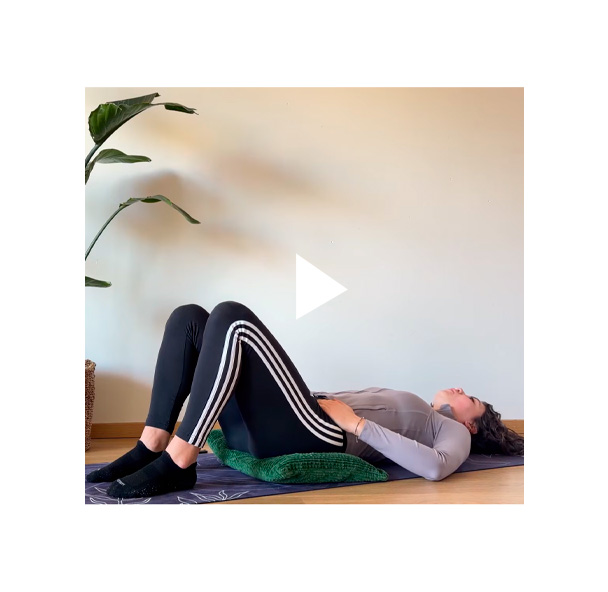
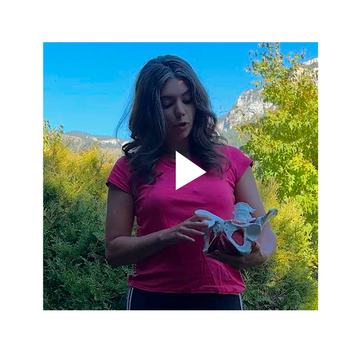

Affiche de l'atelier

TFE Béatrix Craeye
Bienvenue dans votre espace, conçu spécialement pour vous ! Présentation du projet, journal de bord, vidéos explicatives des exercices à faire à la maison et bien d’autres ressources … Tous les outils dont vous aurez besoin réunis au même endroit !
Un très grand merci à vous mesdames ! Ce projet dédié à améliorer les soins pour les femmes ayant subies une excision/ Mutilation Génitale (MGF) et tout autre type de violence sexuelle, n’est possible QUE grâce à vous et votre participation à notre étude !
Pour commencer...


Challenge 28 jours



Questionnaires à télécharger